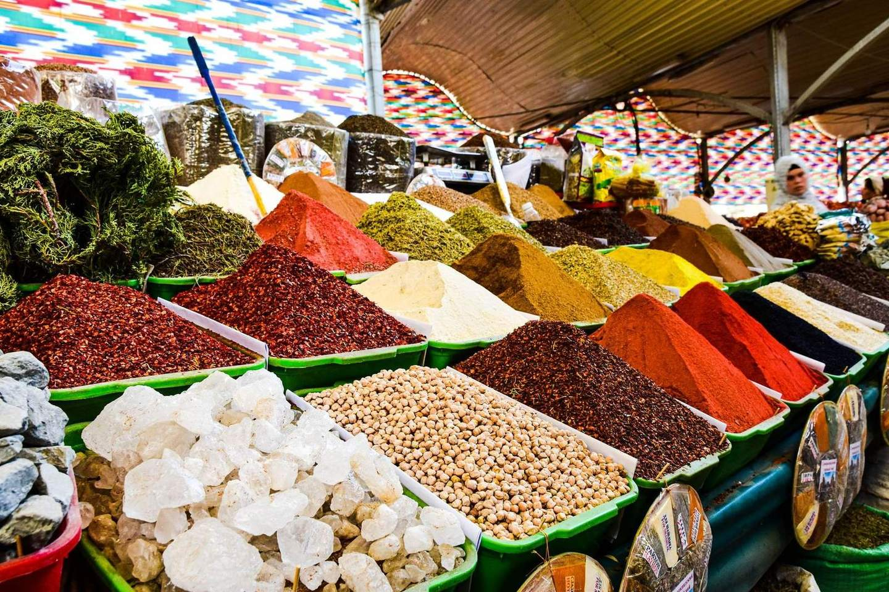

Za’faran
Saffron
It is in our name and under the food. Saffron rice beneath the kabab, shole zard when there is room left for dessert.
Our story
01, The market years
For years, this address kept a Persian market.
02, The turn
Under new management, the market started to cook.
03, Now
Same address, new fire.
The market years
Before this kitchen, the address belonged to a Persian market. Neighbors came in off Pacific Coast Highway for fresh produce, bakery bread, and the halal deli counter at the back.
The shelves fed South Bay kitchens for years. Ours was simply the last one they fed.
A family ran the market here from 2018.

Under new management
In 2024, new management took over and turned the market into a Persian and Middle Eastern deli and catering kitchen. The stew pots go on in the morning, the skewers come off the flame all day, and the catering trays leave packed for the whole table.
The sign changed. The address did not.
The halal pledge
Two claims travel with every skewer that leaves this kitchen. They are printed on our menu, and we repeat them here word for word.
Beef
Chicken
Verbatim from our printed menu.
What we believe
It is in our name and under the food. Saffron rice beneath the kabab, shole zard when there is room left for dessert.
Our menu says it in four words: served off the flame. Koobideh, barg, and soltani hold to that line every day.
We cook in family portions. Combos for the table, platters counted for ten, twenty, or thirty guests.
Three words, each one tied to something on the menu.
Word of mouth
Real reviews from public listings for this address.
Visit